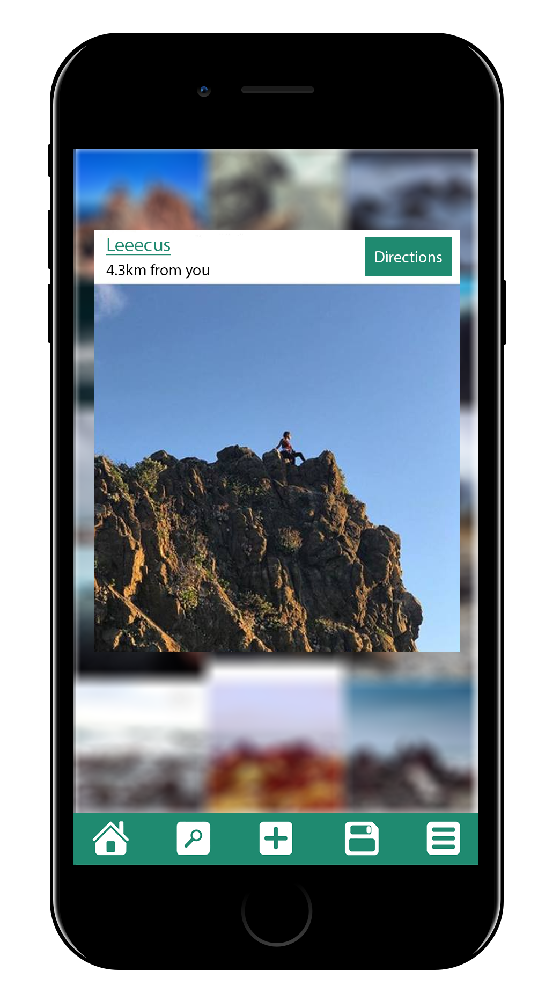
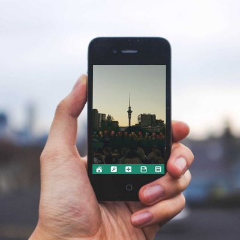
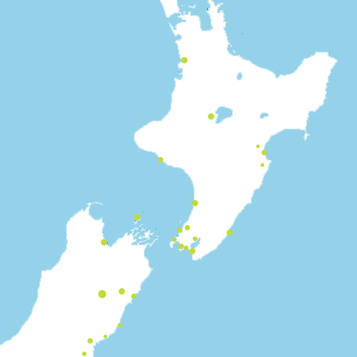
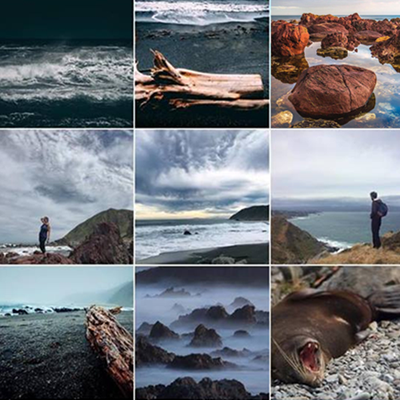
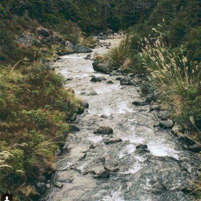
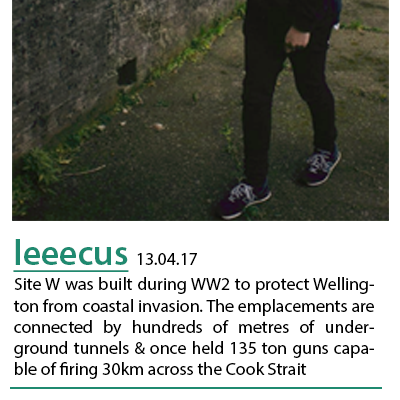
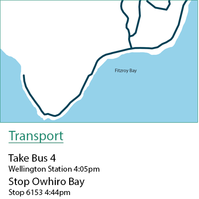
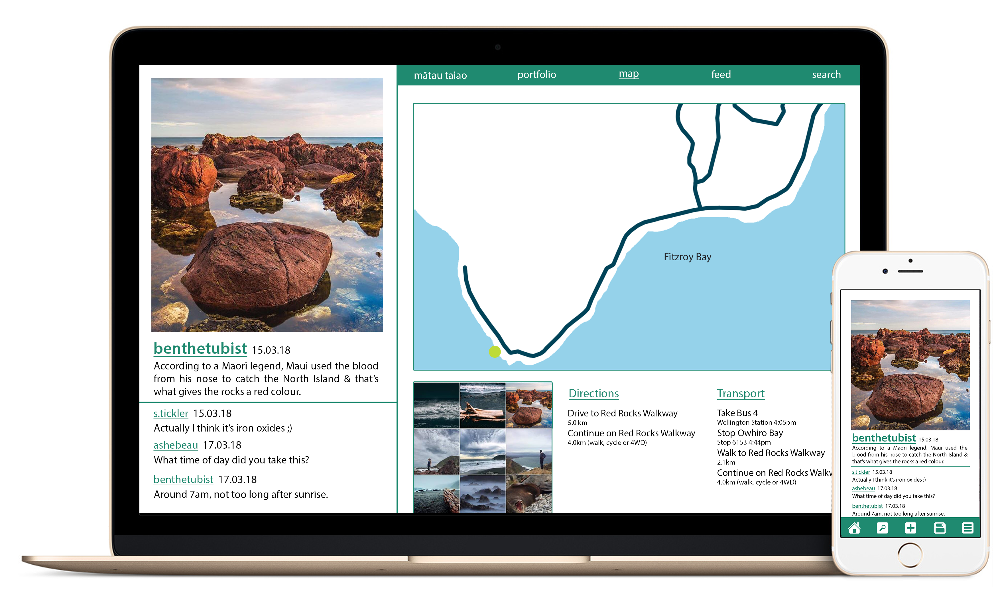

mātau taiao
about
features
devices
mātau taiao
Mātau taiao is all about exploration.
We want to make it easy for you to
find your next adventure.
_
mātau
(verb) to know, acquainted with, understand.
taiao
(noun) world, earth, natural world, environment, nature.

We want to make it easy for you to
find your next adventure.

Upload photos from your phone or camera.

Capture all your memories on a map.

Explore photos from other users

Discover hidden locations.

Learn the history & science of areas around you

Get real time directions to any chosen location.

mātau taiao is compatible across desktop & mobile devices.
This gives you the freedom to explore at home or on the go.
If you are without reception don't worry, you can save maps offline
& create posts ready to publish once you have an internet connection.